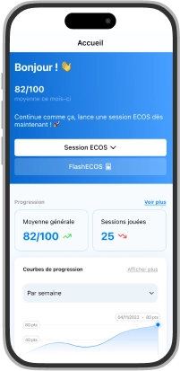

ECOS Alpha, la plateforme unique de formation aux ECOS
C’était pas facile. Mais maintenant, tu peux réviser les 367 connaissances exigibles, dans les 356 situations cliniques. N’importe où, n’importe quand !
Conçu avec des médecins
+ 1000 téléchargements
5/5 sur les stores
